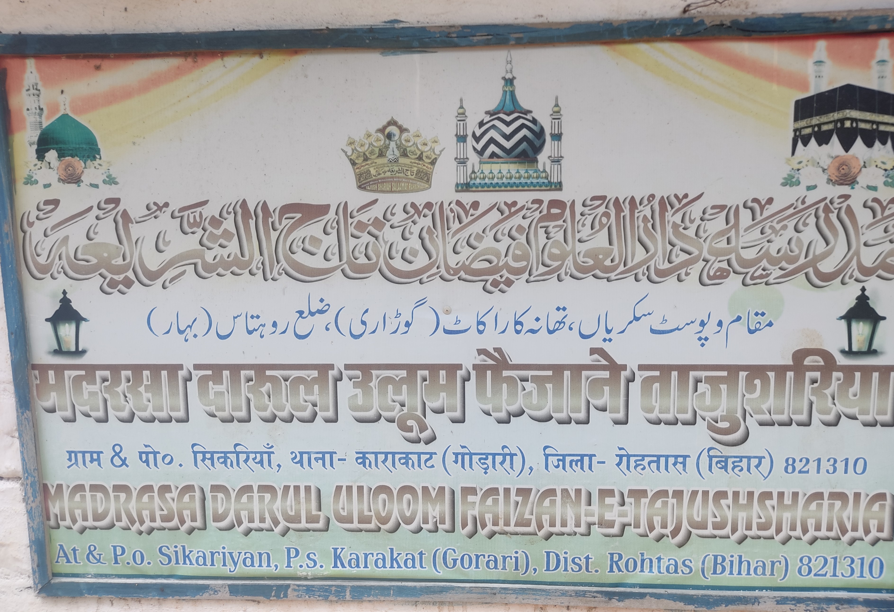
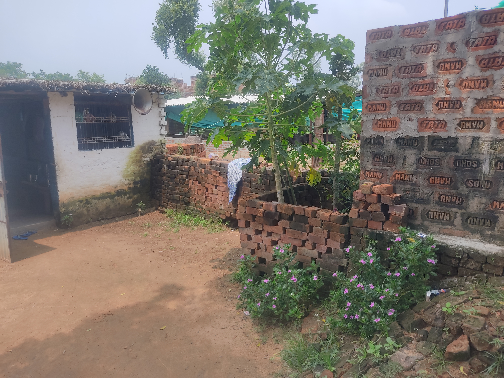
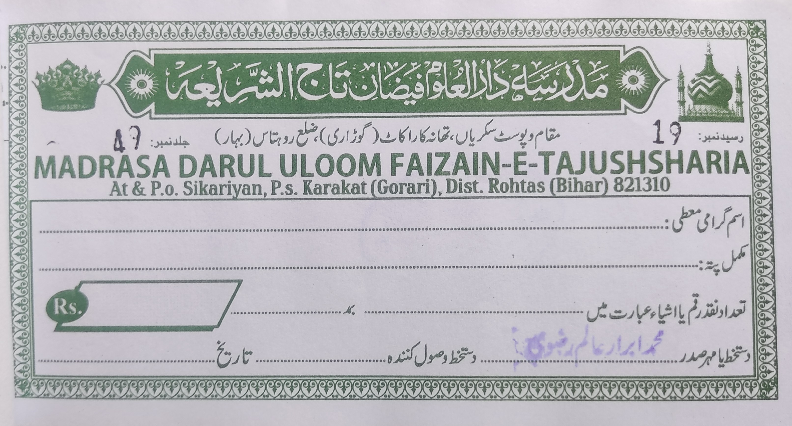
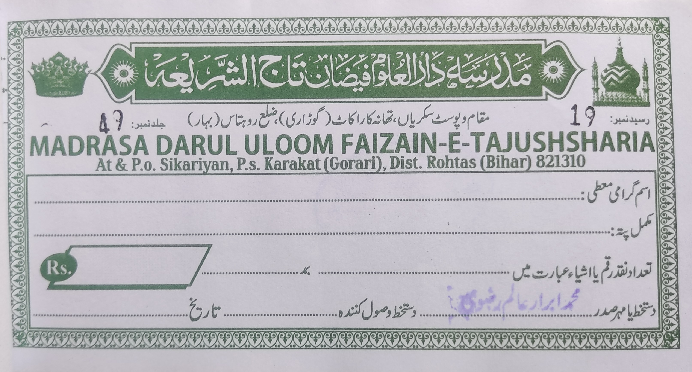
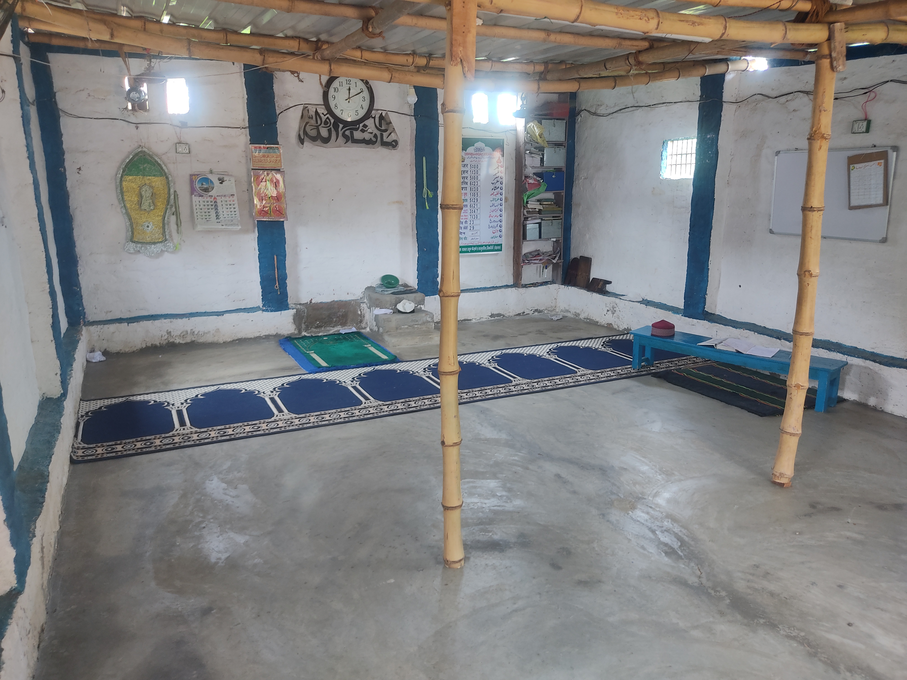
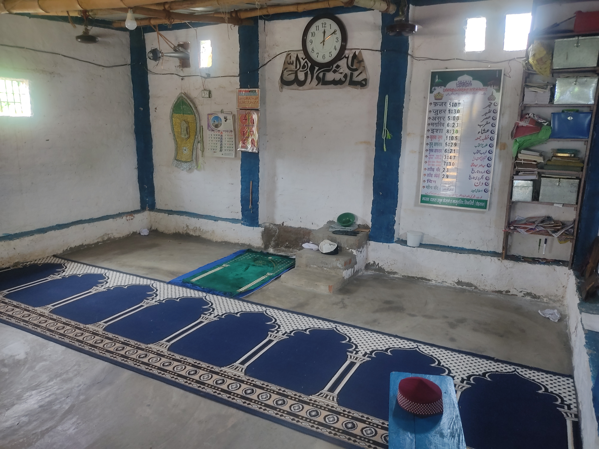
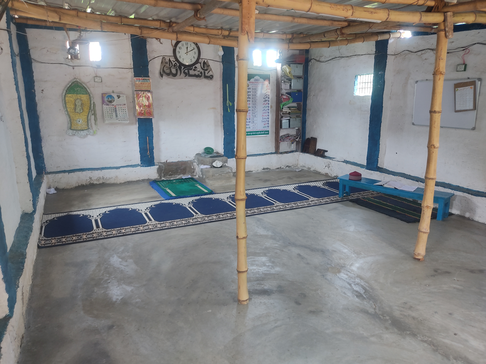
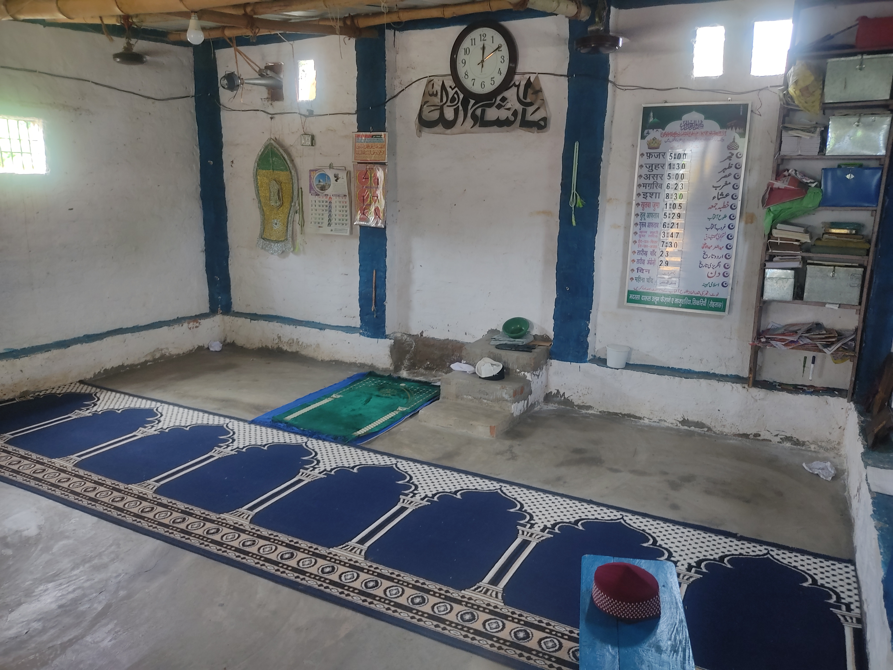

Introduction
Madrasa Darul Uloom Faizain-E-Tajushsharia- Ilmi Aur Deeni Taleem Ka Markaz
Welcome to
Assalamu Alaikum Wa Rahmatullahi Wa Barakatuh,
Madrasa Darul Uloom Faizain-E-Tajushsharia aapko khush-amadeed kehta hai! Humara madrasah ek ilmi aur deeni taleem ka markaz hai jo Qur'an aur Sunnat ki roshni mein isam aur akhlaq ki behtareen taleem faraham karta hai. Humari koshish hai ke hamare students ko sirf ilm-e-deen hi nahi, balki ek achi insaniyat aur samaji zimmadariyon ka bhi ehsas ho.
- Hamari Khidmat:
- Taleem-e-Qur'an: Hamari taleem ke markazi hissa Qur'an ki tilawat aur tafseer hai. Hum Qur'an ko makhsoos tajweed ke sath padhate hain aur uski amali istamal ki taraf bhi rahanmaye karte hain.
- Hadith Aur Fiqh: Hadith ki tafseer aur fiqh ke mutaliq pur-sukoon aur asan tareeqay se ilm faraham kiya jata hai, jisse ke students ko deeni masail ko samajhne mein madad milti hai.
- Islamic Studies: Hamare madrasah mein Islam ke bunyadi usool aur ittehadat se mutaliq mutanazah mozoat ki taleem bhi di jati hai, jo students ko apne deen ko behtar samajhne mein madad deti hai.
- Akhlaq Aur Adab: Islam ke akhlaq aur adab ko farogh dene ke liye hum mukhtalif workshop aur seminar bhi muntazim karte hain, jisse ke students ki shakhsiyat aur khuluq sudhar sake.
- Extra-Curricular Activities: Taleem ke sath sath hum students ko extra-curricular activities jese ke sports, debates, aur art ke mauqe bhi faraham karte hain taake wo ek balanced aur holistic development hasil kar saken.
- Hamari Team:
- Hamari teaching staff meharbaan aur tajurba kaar hain jo students ko ilmi aur akhlaqi zindagi mein raahnumai faraham karte hain. Har ustad ki maqbooliyat aur tajurba hamare students ki behtari ke liye hai.
- Admission Process
- Agar aap apne bachay ko [Madrasa Darul Uloom Faizain-E-Tajushsharia] mein daakhil karna chahte hain, to humare admission process ko jaanne ke liye pe jaayein. Humein khushi hogi agar aap humari madrasah ka hissa banenge.
- Agar aapko kisi bhi tarah ka sawaal hai ya madrasah ke baare mein mazeed maloomat chahiye, to barah-e-karam par humse raabta karein.
Midia
 


 

 




Donation
- Madrasa Ka Kaam Mukammal Karne Mein Aapki Madad Ki Zarurat
-
Assalamu Alaikum
Hamare madrasa ka kaam apne ikhtitam ke qareeb hai, magar abhi kuch aham hissa tamam hona baqi hai. Ye madrasa sirf ek imarat nahi, balki un bacho ke liye ek umeed hai jo yahan taleem hasil karte hain aur apne mustaqbil ko roshan karne ka khwab dekhte hain. Is kaam ko mukammal karne ke liye humein aapki madad ki sakht zarurat hai. Aapka diya hua har paisa in masoom bacho ke liye taleem ka safar mukammal karne mein madadgar sabit hoga. Har ek brick, har ek slab, har ek chhat jo is madrasa mein lagegi, wo aap ke liye sadqa e jariyah banegi." Aapki donation sirf ek click ki doori par hai
-
Madrasa: Taleem Ki Roshni Ka Markaz
Ye madrasa ek roshni ka markaz hai jahan bache apni zindagi ki rahein roshan karte hain. Magar is roshni ko poora karne ke liye aapki madad zaruri hai. Aap apne chhote se hissa se is imarat ko tamam karne mein madad kar sakte hain jahan in bacho ka mustaqbil banega. Aapki donation sirf ek click ki doori par hai
-
Aapki Madad Se Mukammal Hoga Ye Kaam
Hamara madrasa jo ke taleem ka markaz hai, uska kaam takreeban mukammal ho chuka hai, magar abhi kuch kaam baqi hai. Aapka diya hua chhota sa hissa is madrasa ko mukammal karne mein madadgar hoga, aur aapke liye ek behtareen sadqa e jariyah banega. Aapki donation sirf ek click ki doori par hai
- Madrasa Ke Bachon Ke Liye Ek Mehfooz Aashiyana
- Assalamu Alaikum
Hamare madrasa mein taleem haasil karne walay masoom bache ek mehfooz aur pur sukoon aashiyana ke mohtaaj hain. Ye bache apni poori zindagi deen ke ilm ko hasil karne aur usko phailane mein guzarenge, magar aaj wo ek chhat ke intezar mein hain. Aapka diya hua chhota sa hissa in bacho ke liye ek ghar ban sakta hai. Har ek brick jo is ghar mein lagegi, wo aap ke liye sadqa e jariyah banegi jo qayamat tak aapke liye sawab ka zariya banegi. Aapki donation sirf ek click ki doori par hai
- Madrasa Ke Bacho Ke Liye Aapki Zaroorat Hai
In bacho ke paas aaj ek ghar nahi hai jahan wo apne sar ko thaam sakein. Aap apni thodi si madad se in ke liye ek chhat ka intezam kar sakte hain. Har paisa jo aap in bacho ke liye denge, wo aapke akhirat ke liye ek paaya banega.Aap ke diya hua har paisa in masoom bacho ko ek mehfooz jaga dega jahan wo apni zindagi ki buniyaad rakhenge. Aapki donation sirf ek click ki doori par hai
-
Ek Ghar Jo Aap Ke Ehsan Ka Hissa Banega
"Jab ye bache is madrasa mein apna waqt guzaar rahe hote hain, toh wo sirf taleem hi nahi hasil karte, balki apni zindagi ka woh hissa bana rahe hote hain jo aap ke diya hua hoga. Aapki madad se hum in bacho ke liye ek mehfooz ghar banwa sakte hain jahan wo sakoon se reh sakte hain aur apni taleem par poori tawajjo de sakte hain. Aapki donation sirf ek click ki doori par hai
Contact Us
Admission Ke Liye Rabta Karein
Agar aap apne bacho ko hamare madrasa mein taleem dilwana chahte hain, toh humein rabta karein. Hamare madrasa mein taleem lene wale bache na sirf Quran aur Sunnat ki taleem hasil karte hain, balki duniya ke muqable ke liye bhi tayar kiye jate hain.
Aap apne bache ka admission karwane ke liye niche diye gaye details par hum se rabta kar sakte hain:
Name:Md Irfan
Contact Number: 9470463078
Name:Md Ibrar
Contact Number: 9973621173
Location
Village- Sikariyan, P.S- Karakat(Gorari),Dist- Rohtas(Bihar)821310